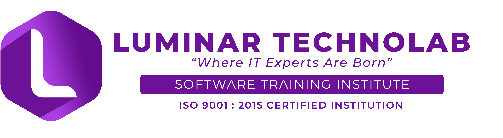

Our professional trainers with years of industry experience helps you get trained &placed in emerging technologies like Big Data, Data Science, Machine Learning, Python
Providing advanced level Gen 4.0 software training to students, Luminar Technolab is an IT finishing school situated at Kakkanad, near Infopark Cochin. Luminar Technolab is affiliated to National Council for Technology and Training(NACTET). NACTET is an autonomous organisation registered under Govt of Kerala and Government of India NCT, New Delhi under Indian trust act.
Born out from a group IT professionals with more than 15 years of industry experience, Luminar Technolab offers best software training and placement in emerging technologies like Big Data Analytics, Machine Learning, Artificial Intelligence, Data Science, Automation Testing, Full Stack Development, Python, MEAN Stack, Digital Marketing, PHP, Angular, Power BI & Tableau.
Take me to Luminar| SL NO | COURSE | DURATION | FEE |
|---|---|---|---|
| 1 | MEARN | 4 MONTHS | 35000 |
| 1 | PYTHON | 4 MONTHS | 32000 |